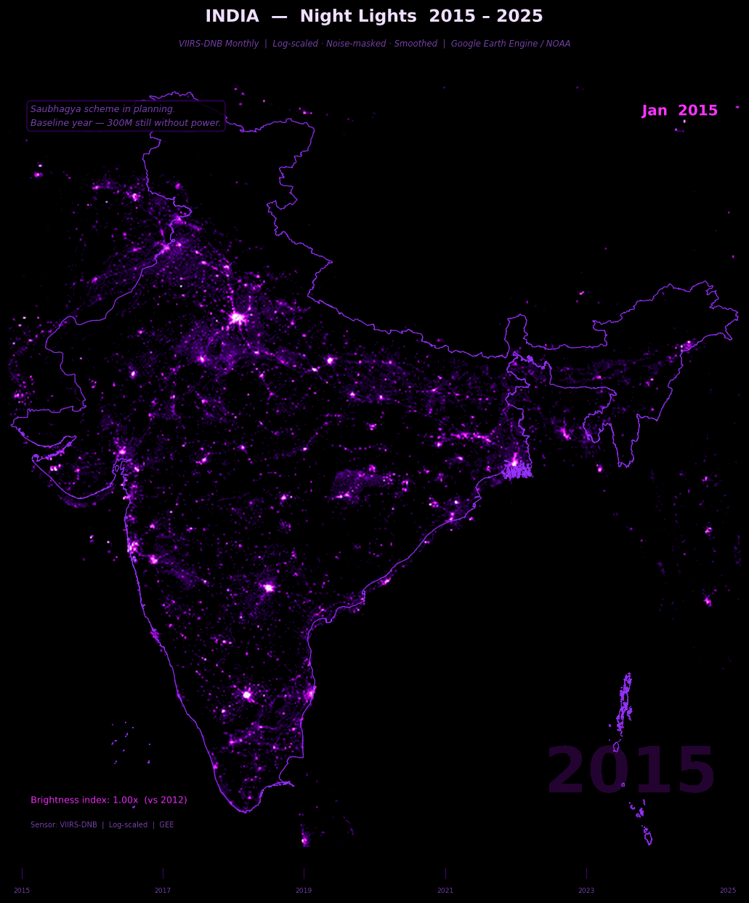

Monthly satellite animation of electrification & urbanisation 2015 to 2025
This project uses VIIRS-DNB satellite imagery from Google Earth Engine to animate India’s night-light radiance every month from 2015 to 2025 132 frames of electrification history. The images are processed using log-scaling, noise masking and temporal smoothing standard techniques in remote-sensing research to reveal both the blazing metros and the faint glow of newly electrified villages.
Each frame = one month of VIIRS satellite data. Colour encodes radiance intensity. The progress bar at the bottom shows exact position in the 2015 2025 timeline.

VIIRS-DNB monthly composites India 2015 2025 132 frames • log-scaled • noise-masked • temporally smoothed
The most visually dramatic change in the animation. Watch eastern UP, Bihar and Odisha historically the darkest regions brighten month by month through 2017 18 as the government’s 100% household electrification drive reaches remote villages.
One of the clearest satellite signatures of the pandemic. Industrial zones around Surat, Pune and Chennai dim noticeably in March 2020 as factories shut. The recovery from June 2020 onwards is equally visible a rare natural experiment in human activity.
By 2019 2022 the Delhi Mumbai Industrial Corridor and the Chennai Bengaluru highway appear as bright linear features in the animation. These infrastructure investments are legible from space before they register in economic statistics.
Every year shows a subtle seasonal pattern cloud cover during the monsoon months attenuates the satellite signal. This is physical, not economic. Temporal smoothing reduces but does not fully remove this seasonal oscillation, which is itself an interesting data artefact.
Core GEE processing noise mask, log scaling and download:
# Fetch one month of VIIRS night-lights research-grade processing def get_viirs_month(year, month): start = ee.Date.fromYMD(year, month, 1) end = start.advance(1, "month") img = (ee.ImageCollection("NOAA/VIIRS/DNB/MONTHLY_V1/VCMSLCFG") .filterDate(start, end) .select("avg_rad") .median() .max(0) .clip(india_region)) img = img.updateMask(img.gt(0.5)) # noise mask img = img.add(1).log() # log(1+x) scaling img = img.divide(4) # normalise 0-1 return img.rename("lights") # 3-month temporal smoothing removes atmospheric flicker for i, key in enumerate(keys): neighbors = [arrays[keys[i+di]] for di in [-1,0,1] if 0 <= i+di < len(keys)] smoothed[key] = np.mean(neighbors, axis=0)